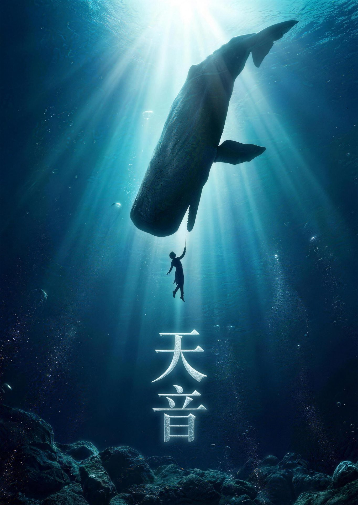
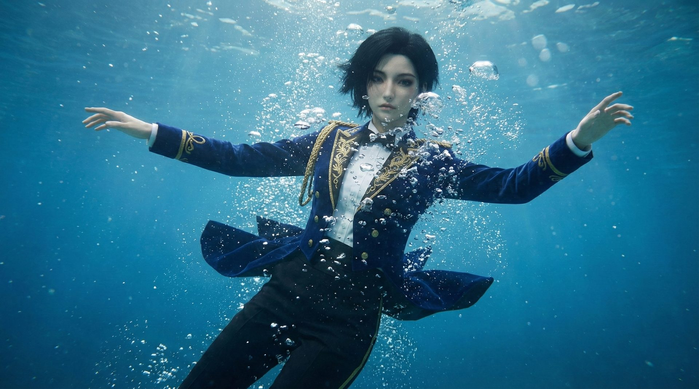
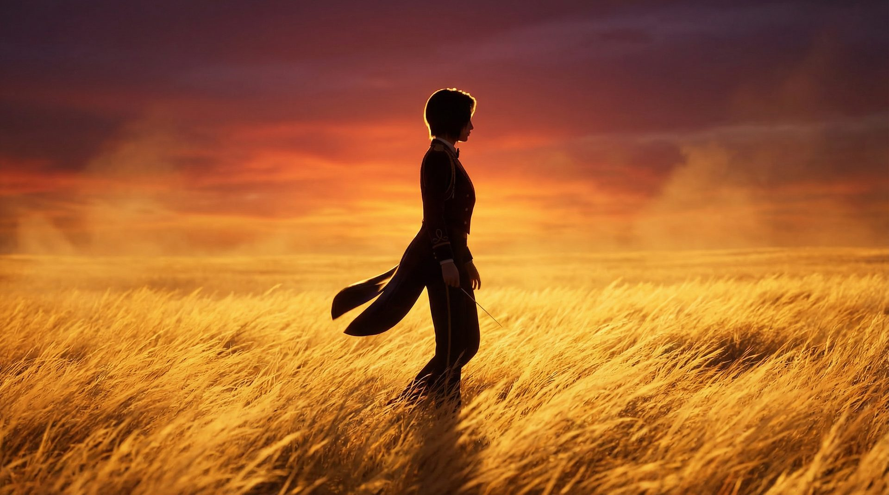
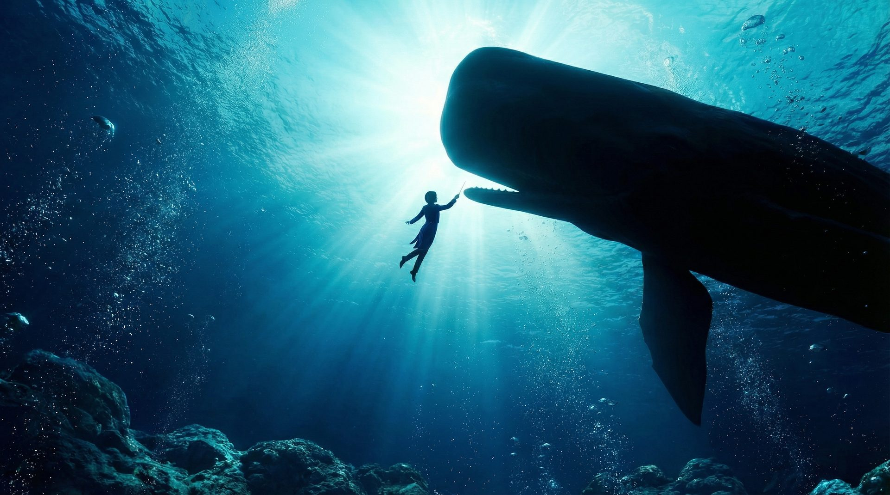

W / 01
万物之声 · 天音

Role
Director / Editor
Type
AIGC Short Film
Award
2026 AI 春晚 · 最佳作品奖
Year
2026
未来采音师夔音穿梭于各个自然空间，收集万物之声。
一部关于声音、生态与自然的 AIGC 短片，以未来时代为出点，以视觉与声场共同构建一个"后人类"万物有灵的视觉谱系。
从网络空间穿梭到鲸落海洋、到奔腾草原、再到空谷峰林——在同一个世界观里以声音串联起多套完全不同的视觉体系，这本身就是对 AIGC 工作流协调能力的检验。
观看作品预览 · Bilibili

